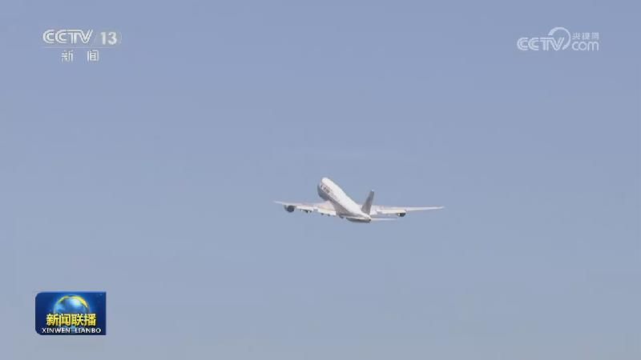
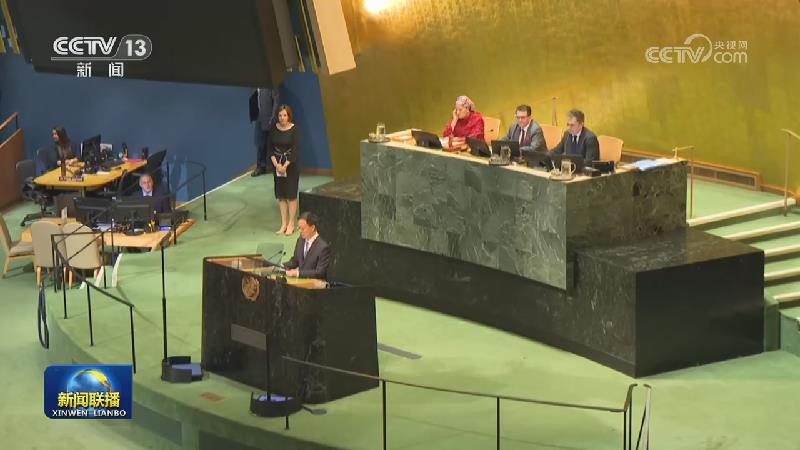
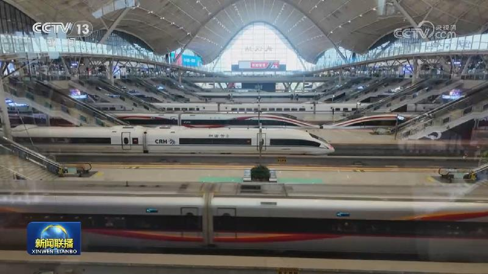
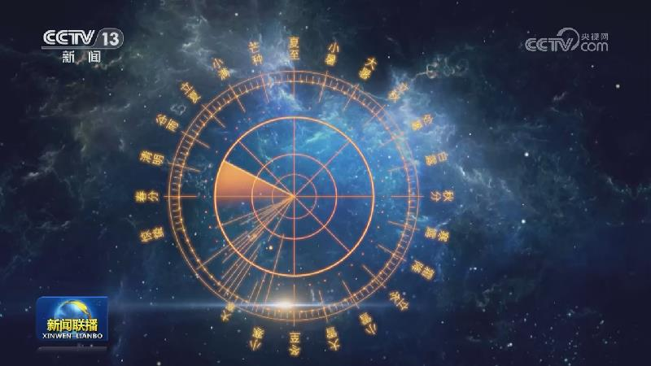
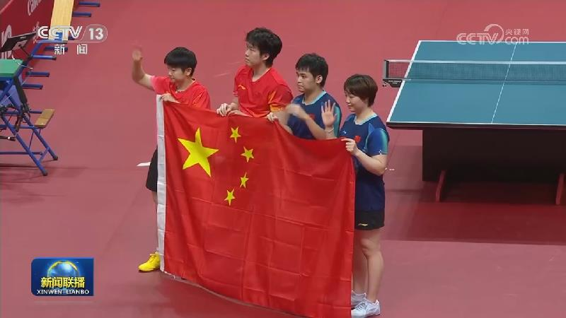
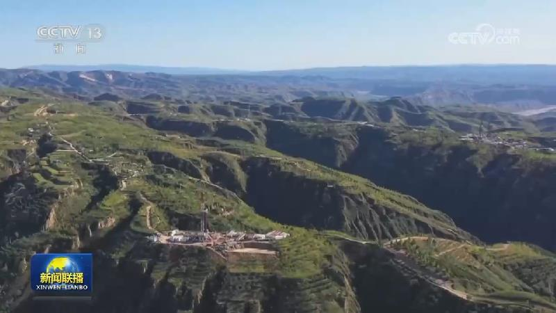

01
【新思想引领新征程】守护文化遗产 滋养当代生活
习近平总书记指出：“历史文化遗产不仅生动述说着过去，也深刻影响着当下和未来；不仅属于我们，也属于子孙后代。保护好、传承好历史文化遗产是对历史负责、对人民负责。”在习近平文化思想指引下，我国文化遗产保护工作接连取得多项重要、突破性进展，保护成果更多惠及人民群众，走出了一条文脉赓续与时代发展相协调的中国特色之路。

习近平总书记指出：“历史文化遗产不仅生动述说着过去，也深刻影响着当下和未来；不仅属于我们，也属于子孙后代。保护好、传承好历史文化遗产是对历史负责、对人民负责。”在习近平文化思想指引下，我国文化遗产保护工作接连取得多项重要、突破性进展，保护成果更多惠及人民群众，走出了一条文脉赓续与时代发展相协调的中国特色之路。

由中央广播电视总台制作的电视专题片《开辟大国相处正确之道 书写中美关系历史新篇——习近平主席对美国进行国事访问纪实》将于今晚（9月27日）黄金时间在总台央视综合频道、新闻频道并机播出。

当地时间9月26日，国家副主席韩正在纽约联合国总部出席第81届联合国大会一般性辩论并发表讲话。
国以安为兴，民以安为乐。新时代以来，全国政法战线深入学习贯彻习近平法治思想和总体国家安全观，统筹发展和安全，坚持以人民为中心，全力建设更高水平平安中国，为全面推进中国式现代化提供坚强保障。
中秋假期，人们走出家门，在丰富多彩的活动中欢度佳节，感受浓浓的喜庆氛围。山西太原的晋祠博物馆迎来古建参观热，这里有历史悠久的殿堂楼阁、亭台桥榭，游客漫步其中，探寻古建筑的历史文脉。江苏苏州的虎丘庙会游人如织，来自各地的非遗展演精彩登场，人们漫步山林间，一边欣赏江南秋景，一边观赏传统技艺。……

为期三天的中秋假期今天（9月27日）结束。假期期间，交通出行需求保持高位，短途出行活跃。

今天（9月27日）是农历八月十七，据天文学家计算，今年中秋最圆的月亮正好就在今天出现。中国传统历法源自上古先民观天象、察节令、授农时。我们一起在《文化中国行》中，循着明月清辉，感受华夏先民观天察时的古老智慧。
今天（9月27日），大熊猫“平平”“福双”从成都双流机场乘机前往美国亚特兰大动物园，开启为期十年的旅居生活。为保障跨洋运输的安全与舒适，中方团队制定了详细运输方案。美方资深兽医和饲养员随机陪同两只大熊猫前往美国。

第二十届亚运会继续进行，在今天（9月27日）上午结束的自由式小轮车女子公园赛决赛中，孙思蓓夺得金牌。
今天（9月27日），中国人民解放军南部战区位黄岩岛周边海空域组织海空联合演训，重点演练侦察预警、快速机动、联合搜救等实战化科目，有效检验部队海空协同、快速支援和体系制胜能力。

第五届全球数字贸易博览会取得多项成果
国际人士表示，习近平主席致全球发展倡议5周年高级别对话会的贺信令人备受鼓舞，为推动国际发展合作，重振全球发展事业凝聚合力、树立信心。
阿曼称力保霍尔木兹海峡安全通行